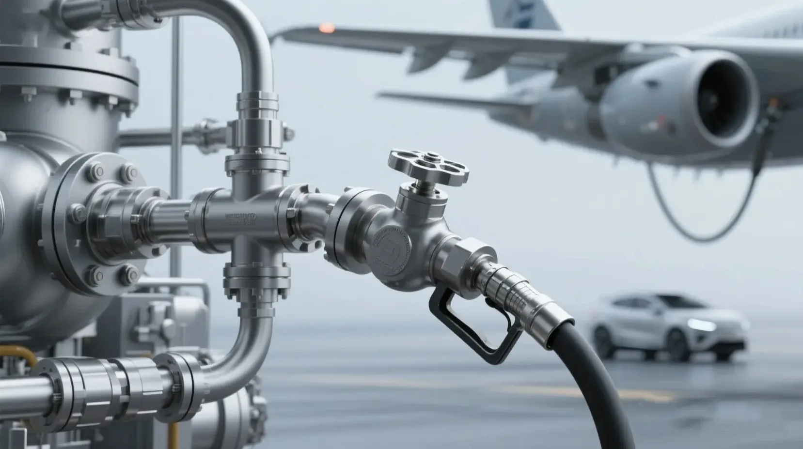
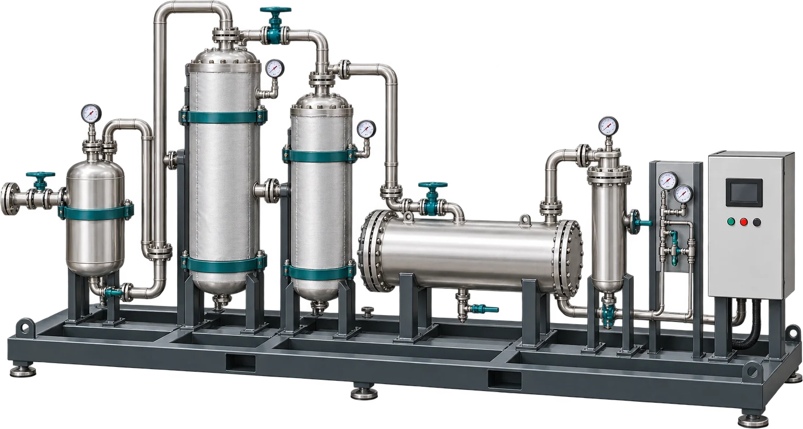
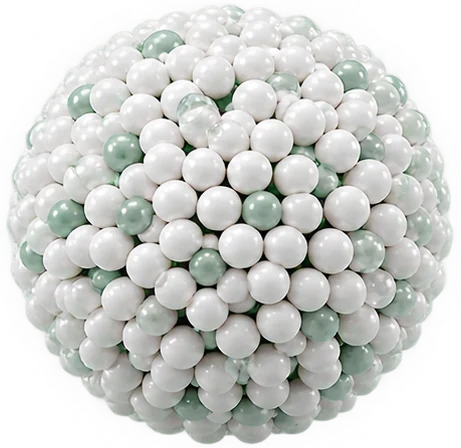
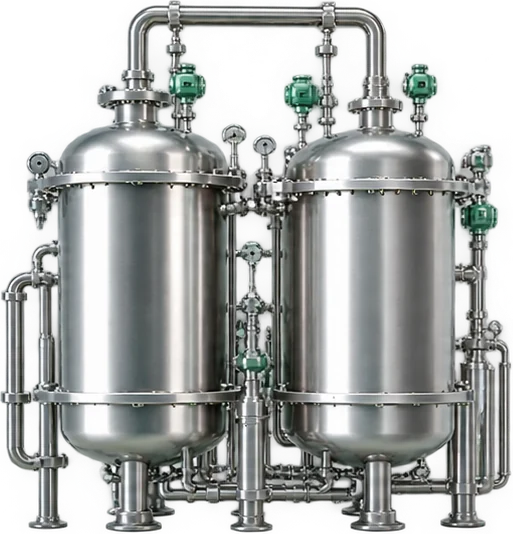

张若晗Dr Ruohan Zhang
牛津大学物理学本硕，剑桥大学化学工程博士。负责公司战略、SAF 产品定义与产业化。
Physics at Oxford, PhD in chemical engineering at Cambridge. Leads strategy, SAF product definition and industrialisation.



81 项专利基础，研究发表于 Energy & Fuels 等期刊An 81-patent base, with research in Energy & Fuels and more
我们的催化升级模块，把废塑料、废轮胎产生的波动热解气，变成能直接用来合成可持续航空燃料（SAF）的稳定合成气。
Our catalytic upgrading module turns the volatile gas from waste plastics and tyres into stable syngas, ready to make sustainable aviation fuel (SAF).
团队成员来自Our team comes from

“每天产生的废塑料、废轮胎里，藏着大量从未被回收的碳。”“Every day’s waste plastics and tyres hold carbon that nobody recovers.”
填埋、焚烧和物理回收都消化不了低值料。我们让它变成航空燃料的原料。
Landfill, incineration and mechanical recycling can’t handle low-grade waste. We turn it into feedstock for jet fuel.
看看怎么做到See how上游热解、下游合成都已经存在，缺的是中间一个能稳定工作的接口。
Pyrolysis upstream and synthesis downstream already exist. What’s missing is a reliable interface between them.

组分复杂、波动大。焦油和硫、氯、氮杂质会让下游催化剂中毒，装置被迫停机。
The mix is messy and keeps shifting. Tar and sulphur, chlorine and nitrogen poison downstream catalysts and force shutdowns.
先识别气体，再两级催化重整，把焦油、甲烷和轻烃转化为 H₂ + CO，直接送往费托或甲醇合成。
We read the gas, then reform it in two stages, turning tar, methane and light hydrocarbons into H₂ + CO for Fischer–Tropsch or methanol synthesis.
抗中毒、高活性、寿命长。两级床层里，第一段牺牲床承接焦油与多环芳烃，第二段专注深度重整。
Poison-resistant, active and long-lived. A sacrificial first bed takes the tar and polyaromatics so the second can focus on deep reforming.
多相反应、高效传热、结构灵活。标准模块可以并联，按气量放大。
Multiphase reaction, efficient heat transfer, a flexible structure. Standard modules run in parallel to match your gas flow.
先识别气体的组分与波动，再实时调整蒸汽碳比、温度和空速。原料在变，输出不变。
It reads the gas and how it fluctuates, then adjusts steam-to-carbon ratio, temperature and space velocity in real time. The feed moves; the output doesn’t.


长途航班无法电气化，航空减碳只能靠液体燃料。欧盟已立法要求 SAF 掺混比例逐年提高，而供给远远不够。
Long-haul flight can’t be electrified, so aviation can only decarbonise with liquid fuel. The EU has legislated a rising SAF share, and supply is nowhere near it.
IATA (2026), UK DfT, Grand View Research (2026), European Commission
把你的热解气数据或样品交给我们，先看清它能变成什么。
Send us your pyrolysis-gas data or a sample. We’ll show you what it can become.
针对你的气源与下游路线，在实验装置上定制升级方案。
We tune an upgrading solution to your gas and downstream route on our lab rigs.
标准模块接入现有热解装置，不用重建前端，按气量并联配置。
Standard modules connect to your existing pyrolysis unit, no front-end rebuild, in parallel to match your flow.


项团队及相关机构累计专利patents across the team and partner institutions
覆盖从固废到合成气、从合成气到燃料的完整链条。
Covering the whole chain, from waste to syngas to fuel.
牛津大学物理学本硕，剑桥大学化学工程博士。负责公司战略、SAF 产品定义与产业化。
Physics at Oxford, PhD in chemical engineering at Cambridge. Leads strategy, SAF product definition and industrialisation.

华中科技大学博士，南京师范大学讲师。论文 57 篇，专利 60 余项。
PhD, Huazhong University of Science and Technology; lecturer at Nanjing Normal University. 57 papers, 60+ patents.

中科院青岛能源所研究员，曾任斯伦贝谢剑桥研究中心高级科学家。论文 60 余篇。
Professor at the Qingdao Institute of Bioenergy and Bioprocess Technology, CAS; former senior scientist at Schlumberger Cambridge Research. 60+ papers.

废塑料转化与工艺开发Plastic conversion and process

燃烧工程与反应器Combustion and reactors

系统与工程Systems and engineering

催化重整与合成气Catalytic reforming and syngas

商业化Commercialisation

运营与产业合作Operations and partnerships

市场与国际合作Marketing and international
废塑料、废轮胎等碳基固废热解或气化产生的复杂热解气。焦油、轻烃和杂质含量高、组分波动大的气体，正是它要解决的问题。
Complex gas from the pyrolysis or gasification of waste plastics, tyres and other carbon-based solids. Gas heavy in tar, light hydrocarbons and impurities, and gas that keeps changing, is exactly what it’s built for.
不需要重建前端。模块接入现有的热解或气化装置，以改造的方式增加一条产品路线。
No. The module connects to your existing pyrolysis or gasification unit as a retrofit that adds a product route.
输出稳定的 H₂ + CO 合成气中间体，可以接费托合成生产 SAF，也可以用于甲醇合成和制氢。
It’s a stable H₂ + CO intermediate. It can feed Fischer–Tropsch synthesis for SAF, or methanol synthesis and hydrogen production.
团队在 Energy & Fuels、Chem. Eng. J.、Fuel 等期刊发表了相关研究，团队及相关机构累计拥有 81 项专利。
Peer-reviewed work in Energy & Fuels, Chem. Eng. J., Fuel and other journals, and 81 patents across the team and partner institutions.
从气体评估开始：把你的热解气数据或样品交给我们，我们先判断它能升级成什么，再一起定联合开发方案。
With a gas assessment. Send us your pyrolysis-gas data or a sample; we’ll show what it can be upgraded into, then plan joint development together.

评估你的热解气、针对现有装置联合开发，或者 SAF 与绿色甲醇项目合作，都欢迎来信。
Gas assessment, joint development on an existing unit, or a partnership on SAF or green methanol: write to us.